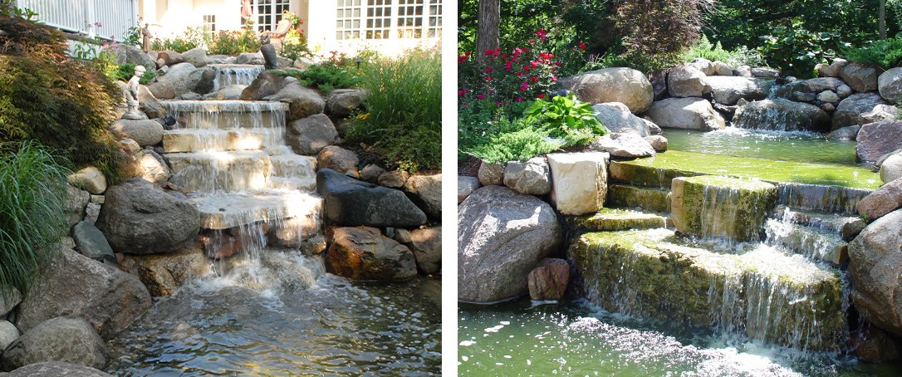

Kako Pretvoriti Padinu U Prekrasno Jezerce
Uređenje nagnutog dvorišta može biti izazovno, jer neravna površina može dodati neke komplikacije projektima kao što su izgradnja verande i dvorišta. Ali postoji jedna vrsta pejzažnog projekta za koju padine dobro odgovaraju: vodeni pejzaž!
Posedovanje nagnutog dvorišta olakšava stvaranje čitavog niza vodenih objekata, uključujući vodopade, potoke i jezerce. To takođe znači obilje mogućnosti za prelepu sadnju, jedinstvene kamene radove i intimne prostore za sedenje za uživanje u zvuku tekuće vode.
Dodavanje vodenog elementa vašem dvorištu ima mnogo prednosti osim očigledne estetske vrednosti. Slušanje tekuće vode može nam pomoći da se osećamo opuštenije, da povećamo protok krvi u mozgu i srcu i da ublažimo anksioznost. Karakteristike vode takođe mogu da nas inspirišu, a odlične su za osvajanje mašte dece!
Imati bare, potoke ili vodopade u svom dvorištu je takođe dobro za životnu sredinu. Pruža lako dostupan izvor vode za lokalne divlje životinje, uključujući one najvažnije oprašivače kao što su ptice, pčele i leptiri. Tekuća voda takođe može da prikrije spoljašnju pozadinsku buku, poput zvukova saobraćaja ili brbljanja sa susednih imanja.
Kako svoje dvorište pretvoriti u vodeni vrt
Pošto vodeni objekti mogu biti složeni za izgradnju, preporučujemo da odaberete profesionalne pejzažiste koji će vam pomoći da postignete željeni izgled. Postoji mnogo različitih aspekata koje treba razmotriti, od sistema pumpi preko materijala do sadnje do stvarnog dizajna sistema za vodu. Štaviše, pri izgradnji treba uzeti u obzir faktore kao što su potopljeni dalekovodi, strukturalni integritet i protok kišnice. Profesionalni pejzažisti pristupaju ovim projektima sa dugogodišnjim iskustvom koje može osigurati da vaš vodeni element izgleda prelepo i neometano funkcioniše u godinama koje dolaze.
Naš tim za dizajn pejzaža je dizajnirao i izgradio zapanjujući broj vodenih objekata širom Srbije. Blisko sarađujemo sa vlasnicima kuća u Srbiji već 20 godina i znamo sve trikove u knjizi. Naš tim stručnih dizajnera može da radi sa nagibom vašeg dvorišta kako bi stvorio vodeni element koji izgleda kao prirodni deo pejzaža ili nešto potpuno jedinstveno i drugačije. Od rustičnog, preko ultra-modernog minimalističkog, do tradicionalnog viktorijanskog, možemo da dizajniramo i izgradimo vašu vodu iz snova.
Dizajniranje i ugradnja vašeg vodenog elementa od strane stručnog tima za uređenje pejzaža uštedeće vam vreme, novac i zdrav razum. Postoji mnogo načina na koje projekat vodosnabdevanja može brzo da pođe po zlu za „uradi sam“. Iako je našem timu uvek drago da pomogne vlasnicima kuća čija je instalacija u kući otišla naopako, ove situacije neizbežno koštaju vlasnika kuće mnogo više vremena i novca nego što se očekivalo.
Štaviše, angažovanje profesionalaca takođe znači da ne morate da pronađete izvore za prave materijale, da razumete inženjering vode ili da radite teško kopanje i dizanje tereta. Profesionalni dizajnerski tim će takođe osigurati da je vaš vodeni element dizajniran za decu ili unuke da se bezbedno igraju ili komuniciraju sa njima.